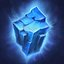

2018-01-09 Rework Diffs
Looking for an overview of changes from a recent hero rework? You've found the place. Green stuff is new, red has been removed. Refer to the Legend below for specifics on box and line highlights.
Legend
-
New
This talent is all shiny and new, and completely green in color -
Changed
UpdatedThe green highlights indicate the new descriptionWhile the red highlights show what the description used to say -
Moved
Moved from level XThis talent has been moved levels; it will have a blue label describing the move.Will generally be followed by a red section listing the old description too -
Unchanged
These white boxes are exactly as they were before; nothing changed here -
Removed
This removed talent is entirely red and sad because it no longer exists for this hero :(
Malfurion
Developer Comment: While Malfurion has had many adjustments and talent shuffles over the past couple of years, his healing mechanics have stayed relatively straight-forward. The core kit changes in this rework are intended to make his gameplay a bit more active. Turning offensive pressure directly into healing output should reinvigorate Malfurion mains while also greatly raising his skill ceiling. We are very excited to see what you think and are actively listening for any and all feedback you have - Elune grant us strength!
Stats
- Basic Attack Damage reduced from 64 to 60
Abilities
-
Regrowth
UpdatedMana: 35 45 Cooldown: 5Heal target ally for 142 (+4% per level) Health instantly and Heal an ally for 400 405 (+4% per level) Health over 20 15 seconds. -
Moonfire
UpdatedMana: 10 15 Cooldown: 3Deal 90 100 (+4% per level) damage to enemies in an area and reveal them for 2 seconds. Allies with an active Regrowth are healed for 140 (+4% per level) Health for each enemy Hero hit by Moonfire. -
Entangling Roots
UpdatedMana: 75 Cooldown: 14Root enemy Heroes in an area for 1.25 seconds, and deal 117 111 (+4% per level) damage over the duration. Affected area grows over 3 seconds.No longer affects non-Heroic targets -
Tranquility
UpdatedMana: 80 100 Cooldown: 80 100Heal nearby allied Heroes for 80 76 (+4% per level) Health per second for 8 10 seconds. Allies affected by Regrowth within Tranquility's area gain 10 Armor. -
Twilight Dream
Mana: 100 Cooldown: 90After 0.5 seconds, deal 355 (+4% per level) damage in a large area around Malfurion, Silencing enemies making them unable to use Abilities for 3 seconds. -
Innervate
Cooldown: 30Grant an allied Hero 20% of their maximum Mana over 5 seconds. While affected by Innervate, their Basic Ability cooldowns recharge 50% faster. Cannot be used on Heroes that do not use Mana.
Talents
1
-
Celestial Alignment
UpdatedIncrease Moonfire's reveal duration by 1 3 second. Malfurion's Basic Attacks against Heroes revealed by Moonfire deal 75% 100% more damage. -
Nature's Swiftness
Malfurion gains 5% Movement Speed per ally Hero affected by Regrowth. -
Shan'do's Clarity
UpdatedInnervate's cooldown recharges 25% faster per ally affected by Regrowth.Reduces Innervate's cooldown by 8 seconds. -
Scouting Drone
Cooldown: 45Places a Scouting Drone at target location, granting vision and revealing a large area around it for 45 seconds. This drone cannot be hidden and is killed by enemies with 2 Basic Attacks. Stores up to 2 charges.
4
-
Deep Roots
Entangling Roots grows 25% larger, and persist on the ground 25% longer. -
Strangling Vines
Moved from level 7Enemy Heroes Rooted by Entangling Roots receive 30% less healing from all sources for 2 seconds. -
Vengeful Roots
Entangling Roots spawns a Treant that deals 65 damage per second and lasts 10 seconds. Repeatable Quest: Hitting enemy Heroes with Entangling Roots permanently increases the Treant's Basic Attack damage by 7. -
Elune's Grace
Increases the range of Regrowth, Moonfire, and Entangling Roots by 25%. -
Full Moonfire
Increases Moonfire's radius by 50% and reduces its Mana cost by 5.
7
-
Nature's Cure
Cooldown: 45Activate to remove all Stuns, Roots, and Slows from allies affected by Regrowth. -
Tenacious Roots
Moved from level 16Entangling Roots grows 25% larger, lasts 25% longer, and Increase the Root duration of Entangling Roots by 0.3 0.25 seconds. When Malfurion is Stunned, the cooldown of Entangling Roots instantly reset. This can only occur every 10 seconds. -
Wild Growth
Each Hero hit by Moonfire extends the duration of currently active Regrowths by 1 second.
10
-
Tranquility
UpdatedCooldown: 80 100Heal nearby allied Heroes for 80 76 (+4% per level) Health per second for 8 10 seconds. Allies affected by Regrowth within Tranquility's area gain 10 Armor. -
Twilight Dream
Cooldown: 90After 0.5 seconds, deal 355 (+4% per level) damage in a large area around Malfurion, Silencing enemies making them unable to use Abilities for 3 seconds.
13
-
Hindering Moonfire
Moved from level 7Moonfire Slows Heroes targets hit by 25% for 2 seconds. -

Ice Block
Cooldown: 60Activate to place yourself in Stasis and gain Invulnerability for 3 seconds. -
Revitalize
Moved from level 16Using Innervate also grants Malfurion 50 Mana and causes his Basic Ability cooldowns to refresh 50% faster for 5 seconds. -
Life Seed
Nearby damaged allied Heroes will automatically gain the heal over time portion of Regrowth. This effect has a 20 second cooldown. -
Shrink Ray
Cooldown: 60Activate to reduce an enemy Hero's damage by 50% and Movement Speed by 50% for 4 seconds.
16
-
Moonlit Harmony
Increase Moonfire's heal by 15% per ally affected by Regrowth. -
Nature's Balance
Increase Moonfire's area by 25% and Regrowth's duration by 5 seconds. -
Ysera's Gift
UpdatedWhile Malfurion is above 75% Health, Regrowth's healing-over-time is increased by 60% 40%.
20
-
Astral Communion
Activate to Channel for 1 second, and then instantly teleport and cast Twilight Dream at the targeted location. Cooldown is shared with Twilight Dream. Passive: Increase Twilight Dream's Silence duration to 4 seconds. -
Lifebloom
Regrowth instantly heals its target for 10% of their missing Health. -
Lunar Shower
Moved from level 7If Moonfire hits a Hero, its cooldown is reduced by 1 second and the next Moonfire within 6 seconds deals 20% more damage. This damage bonus stacks up to 60%.Using Moonfire reduces the cooldown of the next Moonfire by 0.5 seconds, and increases the damage by 15%. Stacks up to 3 times and resets after 6 seconds. -
Serenity
UpdatedEach enemy Hero hit by Moonfire reduces the cooldown of Tranquility by 3 seconds. Increase Tranquility's healing by 10% per ally affected by Regrowth.Increases Tranquility's healing by 25% and it also restores 5 Mana per second. -

Rewind
Cooldown: 60Activate to reset the cooldowns of your Basic Abilities. -
Storm Shield
Cooldown: 45Activate to give all nearby allied Heroes a Shield for 20% of their max Health for 3 seconds.